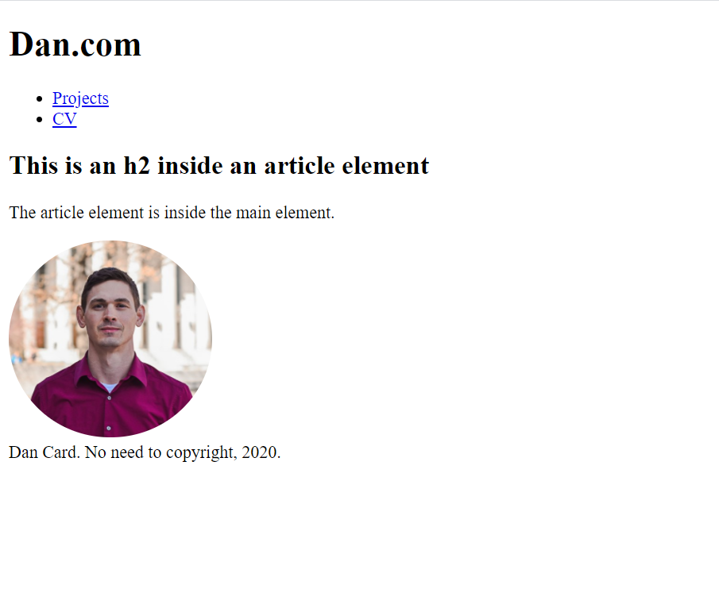

Build a static site, part 2 (CSS)¶
In this guide, I'll provide resources and direction to help you add style to a static site. We'll accomplish this with CSS.
Before you begin¶
This guide assumes some comfort using a text editor and working knowledge of HTML (e.g., you know the common elements and can contruct the skeleton of a webpage).
In addition, this guide assumes you've begun to learn the basics of CSS. If you haven't already, now is a great time to check out these CSS resources.
Revisit your index.html file¶
For the rest of this guide, I'll be modifying a sample index.html file. When I open my file in a browser, this is how it renders:

Take note of the structure of my file. We'll be referencing these particular HTML elements and class names as we add style in our external stylesheet.
<!DOCTYPE html>
<html lang=en>
<head>
<meta charset="utf-8">
<title>My test page</title>
<meta name="description" content="The first draft of a personal website">
<link rel="stylesheet" type="text/css" href="styles/style.css">
</head>
<body>
<div class="wrapper">
<header>
<h1>Dan.com</h1>
</header>
<nav class="navbar">
<ul class="nav-links">
<li class="nav-item">
<a href="projects.html">Projects</a>
</li>
<li class="nav-item">
<a href="CV.html">CV</a>
</li>
</ul>
</nav>
<main class="content">
<article>
<h2>This is an h2 inside an article element</h2>
<p>The article element is inside the main element.</p>
<img src="images/dan-card.jpg" alt="Dan Card" style="border-radius: 50%; max-width: 25%;">
</article>
</main>
<footer>
Dan Card. No need to copyright, 2020.
</footer>
</div>
</body>
</html>
Create your stylesheet¶
My "website" currently lives in a folder called "portfolio-site-draft" on my desktop. The folder structure looks like this:
portfolio-site-draft
│
└───index.html
│
└───images
│ │ dan-card.jpg
|
└───scripts
|
└───styles
│ style.css
If you don't already have a CSS file named "style" in your styles folder, now is a great time to add one!
Tell the browser where to find the stylesheet¶
I recommend using an external stylesheet instead of embedding your CSS via the <style> tag. Open index.html in your text editor and add the contents of line 8 between the <head> tags. This will tell the browser where to find your external stylesheet when it tries to render your HTML.
<!DOCTYPE html>
<html lang=en>
<head>
<meta charset="utf-8">
<title>My test page</title>
<meta name="description" content="The first draft of a personal website">
<link rel="stylesheet" type="text/css" href="styles/style.css">
</head>
<body>
Add CSS to your stylesheet¶
Now that we've linked our stylesheet and index file, let's add some style to our site. Open style.css in your text editor and and add the following:
html {
box-sizing: border-box;
}
<html> tags. We set the property value to border-box to make it easier to work with layout elements later.
Formatting your CSS
There are many valid ways to format your CSS. I have my own preferences, but you should figure out which approach you like and stick with it!
Let's make a change that we can actually see in our browser. Specify the font for everything between the <body> tags.
html {
box-sizing: border-box;
}
body {
font-family: 'Open Sans', Verdana, sans-serif;
}
Set up the layout¶
CSS offers many ways to approach layout-- so many that it can be a little overwhelming. There is float, positioning, grid, flexbox, and more. For this guide, I'm using Flexbox.
If we look back at my index file, we see that <div class="wrapper"> contains our <header>, <nav>, <main>, and <footer>.
We can apply the display property to the .wrapper selector. Since <header>, <nav>, <main>, and <footer> are all children of .wrapper, they will inherit the value we set for the display property.
In this case, we'll use display: flex and flex-direction: column. I'm also setting min-height and padding. You can worry about those later or play with the values now to get a sense of what they do.
body {
font-family: 'Open Sans', Verdana, sans-serif;
}
.wrapper {
display: flex;
flex-direction: column;
min-height: 100vh;
padding: 0px;
}
.wrapper child elements.
.wrapper {
display: flex;
flex-direction: column;
min-height: 100vh;
padding: 0px;
}
header {
}
nav {
}
main {
}
footer {
}
header {
background-color: aqua;
}
nav {
background-color: blanchedalmond;
}
main {
background-color: cornflowerblue;
}
footer {
background-color: darkseagreen;
}
Using color
You probably want to replace these colors at some point, but temporarily adding some color can be really helpful as you continue to make modifications to your elements. As you choose your own colors, consider how your color scheme will affect the accessibility of your site.
Google's Material design system offers some helpful guidance on accessibility broadly and color and text legibility more specifically.
You can also use WebAIM's contrast checker.
When in doubt, black on white and white on black are unmatched when it comes to contrast!
Continue to add and modify your CSS¶
For example, let's say you want your main element to stretch downward so your footer isn't floating in the middle of the viewport. You also want the contents of main to be offset from edges of the box. We can use flex-grow and padding to accomplish this.
main {
background-color: cornflowerblue;
flex-grow: 1;
padding: 20px;
}